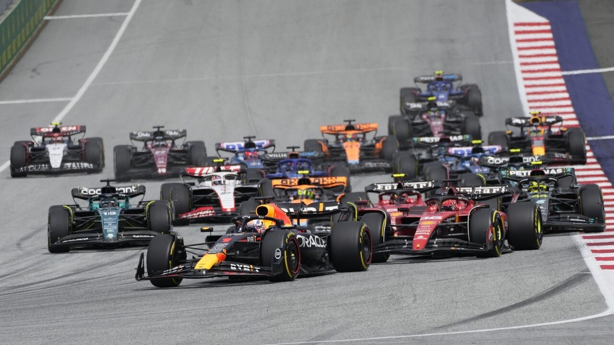

Stručná história formule
Prvé preteky formule 1 sa uskutočnili v roku 1950 na okruhu Silverstone v Anglicku .

V rokoch 1954-1957 jazdecký titul získal Juan Manuel Fangio. V roku 1969 vyhral titul Jackie Stewart ktorý vyhral 9 pretekov z 11.

Od roku 1957 sa začína vo formule najznámejšia rivalita medzi dvoma jazdcami a to medzi Niki Laudom a Jamesom Huntom. James Hunt získal jeden titul a Niki Lauda sa stal 3 násobným majstrom sveta.
V rokoch 1980-1999 získal najviac titulov Alain Prost. Ayrton Senna získal v tomto období 3 tituly a stala sa z neho legenda tohto motošportu. Od roku 2000-2004 je obdobie Michaela Schumachera ktorý získava 4 tituly s Ferrari.

V aktuálnom období má najviac titulov Michael Schumacher ktorého skoro predbehol Lewis Hamilton v roku 2021, ale svoj 8 titul nezískal, pretože ho porazil Max Verstappen, ktorý už má na svojom konte 3 tituly.